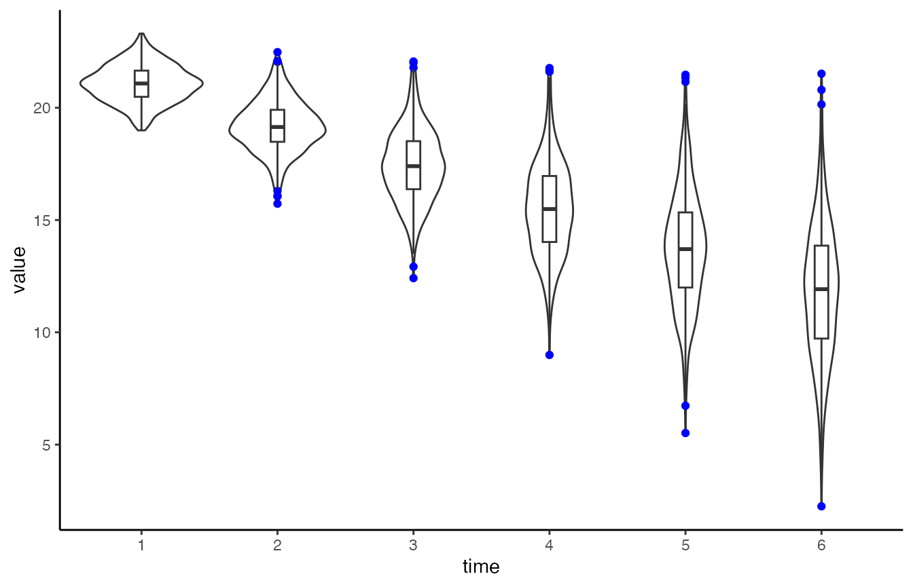

It’s important to understand the data. For longitudinal analyses it may be helpful visualise the individual trajectories. A more detailed overview of the rational behind this be found in Ghisletta and McArdle (2012) or Chapter 2 in Grimm, Ram, and Estabrook (2017). Most basic (and advanced) plots can be done relatively easily using already existing R packages. THe plotting functions of the lcsm package actually build on function from other packages. I’ll show some examples illustrating how to visualise longitudinal data using the R package ggplot2 (Wickham 2016). The function plot_trajectories() of the lcsm R package builds on ggplot2 to make it a little easier to visualize individual trajectories.
I’ll show how to visualise 6 repeated measurements from the data set data_bi_lcsm from this package.
When working with repeated measures I like to create a vector of the variables so I don’t have to type the names again and again, but this really needed and everything would also work without doing this.
# Create a vector of variable names
x_var_list <- c("x1", "x2", "x3", "x4", "x5", "x6")
# Or simply use the paste function and R might work too
paste0("x", 1:6)
#> [1] "x1" "x2" "x3" "x4" "x5" "x6"The repeated measurements need to be in “long” format when using ggplot2 for plotting. Note that this is different to the data structure needed for lavaan, so the same data can’t just be used for plotting without restructuring - lavaan expects the data to be in “wide” format.
I’ll show how to transform the data anyway because the plotting function plot_trajectories() is limited and other plots may be more appropriate. Fortunately, this is a relatively straightforward to do, my favourite function to do this is pivot_longer() from the tidyr package. Next, to get the correct order of repeated measures the time variable needs to be ordered in the correct order. R know how to order numbers but only if the variable is actually numeric. If you’re using variable names that also include letters R might get confused and get the order wrong. Imagine you have four repeated measurements, week 1 to 3 and week 10 and the following variable names: w1, w2, w3, w10. R will get this order wrong and thinks that w1 is followed by w10 and then w2 and w3. To avoid this there are a couple options, I usually do one of the two:
factor() function from base R
# Create long data set
data_long <- data_bi_lcsm %>%
select("id", all_of(x_var_list)) %>%
# Pivot data long
pivot_longer(cols = all_of(x_var_list), names_to = "time", values_to = "value") %>%
mutate(
# Extract number from time variable
time = str_extract(time, "\\d+"),
# At the moment the numbers in the time are 'characters'
# So here it gets transformed to a numeric value
time = factor(as.numeric(time))
)These data manipulations are necessary for plotting longitudinal data in R and the plot_trajectories() function from this package is doing this transformation automatically in the background.
# Create violin plot with outliers in colour blue
# Also add boxplot
ggplot(data_long, aes(time, value)) +
geom_violin() +
geom_boxplot(width = 0.1, outlier.colour = "blue") +
theme_classic()
#> Warning: Removed 154 rows containing non-finite values (stat_ydensity).
#> Warning: Removed 154 rows containing non-finite values (stat_boxplot).
Similar visualisations that communicate the data in a more open way have been developed for example by Allen et al. (2019) and Langen (2020).
While the violin plot focuses on more on the overall distribution, the following plots highlight the individual trajectories for each case in the data. Longitudinal data can be visualised using the plot_trajectories() function from the lcsm package. Here only 1.8% of the data is visualised using the argument random_sample_frac = 0.018. Only consecutive measures are connected by lines as specified in connect_missing = FALSE.
# Create longitudinal plot for construct x
# Select ransom 1.8% of the sample
plot_trajectories(data = data_bi_lcsm,
id_var = "id",
var_list = x_var_list,
xlab = "Time", ylab = "Value",
connect_missing = FALSE,
random_sample_frac = 0.018,
title_n = TRUE)
#> Warning: Removed 1 row(s) containing missing values (geom_path).
#> Warning: Removed 4 rows containing missing values (geom_point).
# Create plot for construct x
# Add facet_wrap() function from ggplot2
plot_trajectories(data = data_bi_lcsm,
id_var = "id",
var_list = x_var_list,
xlab = "Time", ylab = "Value",
connect_missing = F,
random_sample_frac = 0.018,
title_n = T) +
facet_wrap(~id)
#> Warning: Removed 1 row(s) containing missing values (geom_path).
#> Warning: Removed 4 rows containing missing values (geom_point).